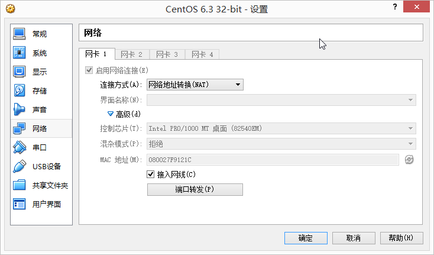
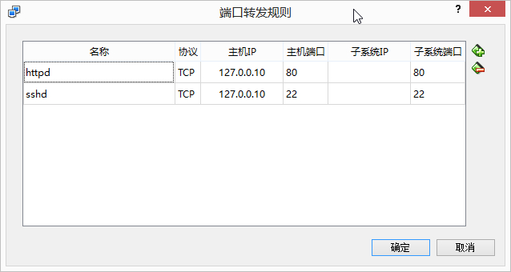

在windows下搭建web环境一般都是用phpStudy之类的一键环境，但是项目最终还是部署在linux上面，无法做到真实的模拟环境。所以考虑用Virtualbox安装CentOS，在虚拟机中模拟，然后进行端口转发即可
-
达到了网页最真实的模拟环境
-
不用在windows中安装apache，php，MySQL…服务，避免搞乱系统
-
启动虚拟机就相当于启动了所需要的服务，真正地达到了一键配置
-
可以安装管理面板更加方便
系统为CentOS 6.3 32bit
安装apache
yum install httpd
service httpd start
主配置文件在 /etc/httpd/conf/httpd.conf
网页目录 /var/www/html/
建立文件 /var/www/html/index.html
虚拟机内部访问测试
w3m 127.0.0.1
没有w3m命令先安装w3m
yum install w3m
显示/var/www/html/index.html的内容,表示在虚拟机内部可以正常访问
端口转发
如图所示，主机端口和子系统端口可以不同，这样在真机访问时要加上转发后的主机端口


虚拟机外部访问
在浏览器中输入127.0.0.10无法打开
一般可能为以下几种情况
-
检查httpd进程是否启动
ps -ef | grep httpd -
检查httpd是否在listen80端口
netstat -tlnp | grep 80 -
检查防火墙设置
默认情况下，端口80是拒绝访问的在防火墙上进行配置：在”COMMIT”的上一行加上如下配置，允许80端口通过防火墙
vi /etc/sysconfig/iptables -A INPUT -m state --state NEW -m tcp -p tcp --dport 80 -j ACCEPT 接着重启防火墙使得配置生效 /etc/init.d/iptables restart 实在不行，关闭防火墙 /etc/init.d/iptables stop
经过检查是防火墙的原因，解决后可以在真机中可以正常访问
最后一步
其余的web服务需要用到端口的做一下端口转发即可，不再一一列举,一般MySQL的3306也会被防火墙阻止，做上述同样的处理即可,同时可以用Navicat来连接虚拟机里的MySQL，方便数据库的管理,也可以安装管理面板方便部署。
虚拟机在启动时以无界面形式启动效果更佳#^_^#